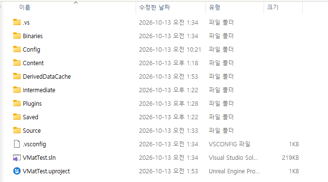

1
Plugins 폴더에 V-Mat 넣기
Put V-Mat in the Plugins folder
프로젝트 폴더 안의 Plugins 폴더에 VMat 폴더를 통째로 넣습니다. Plugins 폴더가 없으면 새로 만듭니다.
프로젝트를 열면 V-Mat이 자동으로 켜집니다.
git으로 받았다면 Binaries 폴더가 없어서, 처음 열 때 다시 빌드할지 묻는 창이 뜹니다. Yes를 누르면 됩니다. 빌드하려면 Visual Studio(C++)가 설치돼 있어야 합니다.
Copy the whole VMat folder into the Plugins folder of your project. Create Plugins if it doesn't exist.
V-Mat turns on by itself when you open the project.
If you got the plugin from git, it has no Binaries folder, so Unreal asks to rebuild it the first time. Click Yes. Building needs Visual Studio with C++.

캡쳐 예정Screenshot to be added
Docs/images/01-plugins-folder.pngPlugins 안에 VMat을 넣습니다.VMat goes inside Plugins.